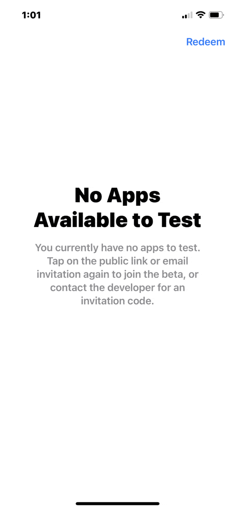
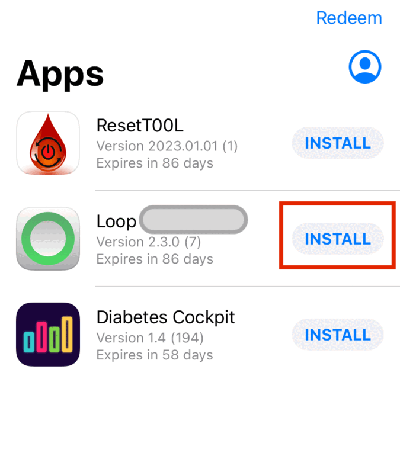
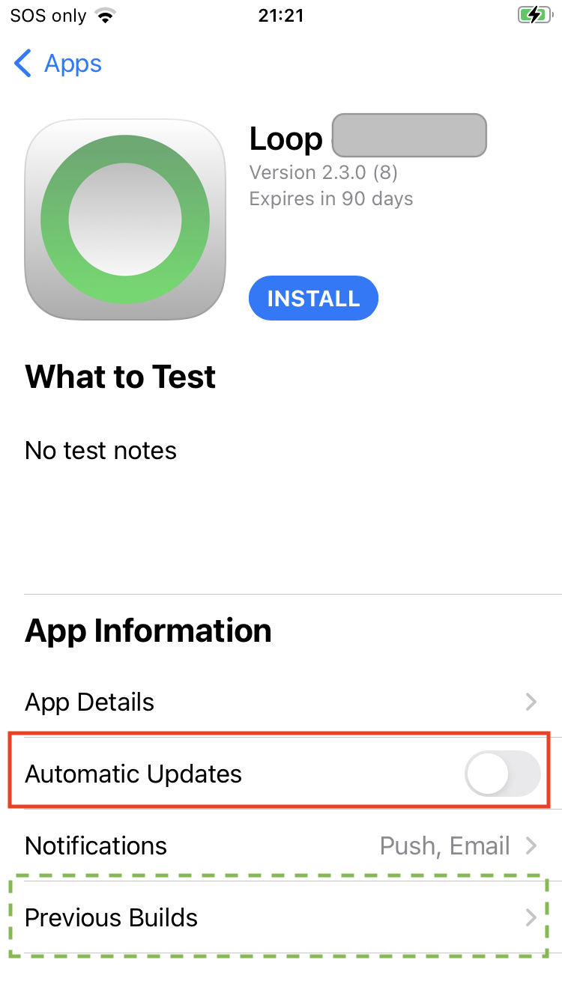

Install on Phone
General Installation Information¶
The Loop app must be built at least every 90 days when using a browser to build. With version 3.4.0 and later, the build is automatic (once a month or with a new release). It is recommended you manually install the new build using TestFlight at your convenience.
After you Build the Loop App with a browser and you get the email that it is availble in TestFlight, you are ready to install on as many phones as you and your family members need.
-
If you later need to add an adult family member to your list, refer to TestFlight Users Overview.
-
Children (under 13 in US, varies by country) cannot use TestFlight with their ID. When you use TestFlight for a Child, you will need to use your ID on their phone (not the whole phone - just the Media & Purchase portion), so send the TestFlight invitation to the email associated with your ID.
Install TestFlight¶
If you already have the TestFlight app installed on your phone, skip ahead to Install App with TestFlight.
To install TestFlight, refer to the GIF below:
- On the phone, open the App Store and Search for TestFlight
- Install or Download to that phone TestFlight
- Hint: On child's phone, do this while logged in as yourself for Media & Purchase
- Logging in as an adult is explained in TestFlight for a Child

Install App with TestFlight¶
Once you get an email that your app is available to test on iOS and watchOS, you can install the app on your phone from TestFlight.
- Note this can be half-hour to an hour after the build displays the green check mark on your browser
- Once the app is on your phone, you can choose to install the watch version using your phone Watch app
- If you did not already add your email to your TestFLight group for your app, go and do it now using these instructions
The first time you use TestFlight on any phone associated with a given email, you must Redeem the code sent to that email inviting you to test the app. The GIF below is for someone who has never used TestFlight.
- Initial screen indicates there are no Apps available to test, tap on Redeem
- Enter your code and tap redeem to enter it
- Click on OK to acknowledge
- Click on Install

If you already have the Loop app on the phone, you'll see the warning about possible loss of data. Don't worry, all your settings remain. Go ahead with the installation.
Subsequent Times on Phone¶
- Open the TestFlight app and find the name you used for your Loop app in the Create Loop App in App Store Connect step
- If you have previously used TestFlight on this phone and don't see the latest build, sometimes quitting and restarting TestFlight will bring that new build into the list of available apps
- Most people will just tap install to get the most recent build
- If you have more than one version number available in TestFlight you can choose which version to install by tapping on the
Previous Buildsrow and then selecting the desired version
- If you have more than one version number available in TestFlight you can choose which version to install by tapping on the
- Tap on Install
- If you already have the Loop app installed on this phone, you will be warned that the app already exists on your phone and that you might lose data
- Click Install again (your pump connection and all your data will be fine)
- Choose Open
- Make sure the Loop app is operating as expected

Automatic Update, Build, Install¶
The instructions on the Configure to Use Browser pages will automatically take the following actions for released versions 3.4.0 and later:
- Update the version of your fork within a week of a new release release
- Automatically create a new build and upload it to TestFlight
- This is only for the
defaultbranch, typicallymain
- Build the app at least once a month and upload it to TestFlight
Unless you make the recommended one-time change to Disable Automatic Install from TestFlight, the default setting for each app found in TestFlight is to:
- Install each new build from TestFlight on the phone as soon as it is detected
- That's fine for some apps, like LoopFollow, but you do not want an app that controls your insulin delivery to install when you are not paying attention
Recommendation¶
Recommended settings:
- Allow automatic update of your fork
- Allow automatic build and upload to TestFlight
- Disable automatic installation on phone from TestFlight
If you are running the development code, you may prefer to turn off the automatic update, but keep the automatic build. To read more about modifying automatic update and build options, please read Automatic Update & Build.
Disable Automatic Install from TestFlight¶
Once the app is available in TestFlight, you can adjust whether it is automatically installed when updated versions are available. We recommend you disable automatic installation so you can choose when to switch to a newer build, which in some cases, may be a newer version.
Go back to the TestFlight app on your phone and tap on your app name in the list to see an expanded screen similar to the graphic below. The row to enable or disable automatic updates is highlighted in the graphic, which shows the feature disabled. This is recommended for all users.
- If you leave automatic update enabled (default), then whenever a new build is created and uploaded to TestFlight , it will be installed immediately (see Unexpected TestFlight Beta Expiration)
- WARNING: If you switch between Building with Browser and Mac, you must disable automatic update or Xcode will not be able to install to your phone

When you are ready to install, just open the TestFlight app and click Install to get the most recent build and then click Open when it completes the installation. All your settings and connections to CGM and Pump are maintained.
Previous Builds¶
If you tap on the row that says Previous Builds, highlighted by the dashed-green rectangle in the graphic above, you can view and choose an older (or lower version number) build (as long as it has not expired).
- In some cases, you need to do this to see the newest build
- For example, if you built version 3.5.0 (
devbranch) and then switched to 3.4.x (mainbranch), TestFlight shows you the most recent 3.5.0 version as the default build to install and you need to go to previous builds to find your newer 3.4.x build
Unexpected TestFlight Beta Expiration¶
Apple TestFlight Bug
It doesn't happen to everyone but it has happened a few times over the years and only for people who have Automatic Update enabled for their TestFlight app.
Symptom:
- App has plenty of time before expiration
- A new build becomes available, for example from the automatic monthly rebuild
- User is told Loop Beta is not available
Solution:
- Open TestFlight and turn off automatic installation for your app
- Install the previous version of the app on the phone manually (with monthly build, it should still be ok)
- Manually start a new build (if there were updates you want to get)
- Manually install the new update
More information:
TestFlight for a Child¶
Minor children are not allowed to install or use the TestFlight app.
An adult, who is a member of the Internal TestFlight Group can log into Media & Purchase (see steps below) without affecting the Apple ID associated with a phone (and thus the health records used by the Loop app for the minor child). After the adult installs or updates the app using TestFlight, they probably should reverse those steps to remove their credentials from Media & Purchase.
Media & Purchase affects access to the App Store, Books, Music and Podcasts.
On the Child phone:
- Tap on Settings
- At the very top of Settings, tap on the Name of the phone, for example,
my kids phone - Apple ID Screen appears
- Tap on Media & Purchases
- Tap on Sign Out, and confirm
- Sometimes the phone requires a reboot before you can sign in with a different ID
- Sign in with the adult Apple ID email and password
- Install or Update the app from TestFlight on child phone
- Repeat the process to sign out the adult and (if needed) sign back in the child
Change the App Store Connect Name¶
Suppose you really don't like the name you picked initially for the Loop app that shows up in the TestFlight app.
You can change it.
Open this link: App Store Connect Apps and log in as needed.
- Click on your app name.
- Click on App Information on the left side (make browser wider if you don't see this).
- Modify the Name under Localizable Information and click on the Save button (upper left)
- If you chose a name that is in use, you'll see the warning screen - try again